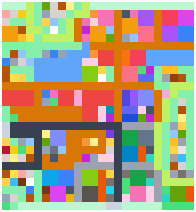
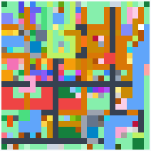
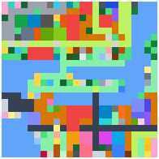
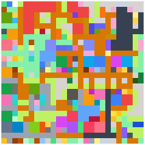
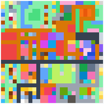

口袋學院物語2 佈局範例集
這裡收錄可以直接抄的校園擺法。每個城鎮都有一張完美佈局——同一張圖上成立全部 29 個人氣景點，而且沒有任何一棟建築走不到；點進去就能一鍵載入本站的佈局模擬器，照著擺或自由修改。下面另有通用的擺法原則與三套適合新手練手的小範例。
小提醒載入範例會覆蓋模擬器目前的地圖。若想保留現有的，先在模擬器用「存檔碼」備份；載入後也可用 Ctrl+Z 復原。
各城鎮完美佈局：29 個人氣景點全成立
遊戲共有五張城鎮地圖，地形差很多，所以「最佳擺法」也不一樣——同一套街廓邏輯放到水塘多的圖上就得改。五張現已全部收錄。每張都附完整的景點座標表、設施清單、階段 × 分區對照表與施工順序。

健康鎮完美佈局 スコヤカタウン · 26×24 最方正好規劃的第一張圖。標準的棋盤路網＋4×4 街廓解，四種鋪面依分區鋪開（幹道道路、教學區走廊、中庭草地、運動設施門前水泥），兩塊高地全部開發成園區，水塘與 32 格斜坡原封不動。 29 / 29 景點 · 148 棟
冬郵小鎮完美佈局 ヒガシクメールタウン · 26×26 校門開在北緣、水塘吃掉 76 格。示範田埂路不可通行、草地高地要擦出坡道，以及破壞 2 格水塘鑿水道——鑿通後的湖心島就是第 4 階段的稀有動物島。 29 / 29 景點 · 124 棟
湖岸小鎮完美佈局 レイクサイドタウン · 24×24 最小、水最多的一張，主題是動線經營：146 格湖面一格不鑿，南北靠天然只有兩格寬的鎖喉走廊相連，再清掉一格高地樹墩讓遊戲自己長出踏石橋開出第二條通道。全圖只拆遷 1 棟被湖圈死的鱷魚池，原生水井與山中湖零成本變現。 29 / 29 景點 · 116 棟
溪谷小鎮完美佈局 ケイコクバレータウン · 26×26 五張圖裡唯一的三層地形（谷底／台地／高地）。開局從校門只走得到 16 格、6 棟原生校舍全被斷崖困住——用橡皮擦擦掉 3 格就解鎖全圖，之後水塘、樹林等原生地物一格不必破壞。 29 / 29 景點 · 150 棟
百靈山丘完美佈局 ヒバリーヒルズ · 26×26 地形最刁鑽的一張：整個初始校園坐在 2 層落差的東北高地上，低地連一座校門都沒有。示範別的圖用不到的招——4×4 景點窗口不管高低差，可以在崖下開窗借高台上的舊校舍當材料。初始建築一棟不拆。 29 / 29 景點 · 157 棟通用設計原則：完美佈局為什麼長這樣
下面這幾條在每一張地圖上都成立，是先讀懂再看個別城鎮頁比較快。各鎮頁面只寫該地形特有的取捨。
- 棋盤式路網。每隔 5 格拉一條街道，橫向縱向都要，全部從校門串起來。這是動線的骨架——只要每棟至少有一面貼到路，學生就走得到；反過來說，只要有一條幹道被卡死，後面幾十棟房子會同時變成「走不到」。街道鋪成哪一種鋪面是下一條的事，骨架本身跟材質無關。
- 四種鋪面怎麼分。遊戲的通行鋪面有道路（外通路）、走廊（木造廊下）、水泥地（パネル廊下）、草地（芝生）四種。四種都能走，而且對 4×4 景點判定完全等價（只有草地本身另外是景點材料），所以差別只在道具加成與美觀——我們的圖是這樣分的：
- 串起所有校門的幹道脊椎（1 條橫軸＋1–2 條縱軸）鋪道路：它是室外主動線，道具「滑板」在道路與草地上加速；深色也讓人一眼看出主動線在哪。
- 教學區、生活機能、舊校舍、運動園區的街道鋪走廊：學生最密集的地方，道具「抹布」在走廊加速，「相機組／寫生」的打工收入也是按走廊格數算的。
- 農牧園區、公園、湖畔的街道鋪道路（同樣吃滑板加成，室外感也對）。
- 草地只鋪街廓內部的小徑與中庭：草地本身就是「菜園」「力量」「清爽」的材料，鋪多只會加分。
- 水泥地只鋪體育館／泳池／道場的門前廣場（1–2 格），不當通道用。水泥地在遊戲裡是否另有機制我們沒有確認，本站只把它當視覺重點；預算緊的話全部改鋪最便宜的那一種，29 個景點一個都不會少。
- 街廓剛好 4×4。路與路之間圍出的方塊正好是一個 4×4，也就是景點判定的窗口大小。所以「同一個街廓裡的設施」＝「有機會湊成同一個景點」，規劃時只要顧好一個街廓就好。
- 外圈蓋房、中庭留草。每個街廓外圈 12 格蓋設施（都貼路），中間 4 格鋪草地或花壇。這既是好看也是划算：中庭那幾格草地順手就把「菜園」「力量」「清爽」的材料湊出來了。
- 一個街廓剛好 4 棟大型建築。2×2 的教室、辦公室、餐廳、便利商店、體育館、游泳池對齊街廓的四個象限，一個 4×4 街廓正好排下 4 棟，而且每棟都有一面貼到外圈的路。這是「大型建築要怎麼排才不會把自己圍死」的標準解。反過來說，體育館＋游泳池＋足球場的「熱血」一組就佔掉街廓 9 格，同一個街廓再塞其他設施就很勉強——大型運動設施要自己獨佔一個窗口。
- 由校門向外的階段擴張。學校排名分四階段（農村 → 發展 → 有望 → 名門），設施是一階一階解鎖的，所以分區也照「離校門的遠近」排：校門周邊與舊校舍留給第 1 階段那幾個便宜景點，年級棟與生活機能是第 2 階段，運動與農牧園區第 3 階段，高地園區與最遠端的稀有動物、宇宙火箭、開羅君系列留到第 4 階段。這樣蓋起來是「一圈一圈往外長」，不會在前期區裡卡著一格要等到名門學園才填得起來的空位。各鎮頁面都有一張階段 × 分區對照表（由成品反推，不是手寫的），照著推進就行。
誠實補一句：我們的產生器對階段只做軟性偏好——「保住 29 個景點」永遠優先於「階段整齊」，所以表上偶爾會看到階段與分區不對盤的組合（後期景點落在前期分區，或反過來）。表格會照實標它的所在分區與可完成階段，不會替它圓場。 - 校長室只有一間，位置要挑。把校長室蓋在辦公室旁邊，「選舉」（校長室＋辦公室＋茶室）和「學習」（校長室＋圖書室＋多媒體教室）就能共用同一間，省下一整組設施。這是全遊戲最值錢的一次卡位。
- 設施共用越多越省。景點會擠在一起是刻意的——一棟焚化爐可以同時進「怪談」「熱情」「燒水」「吃醋」的判定窗口。想省錢就把用到同一種設施的景點排在相鄰街廓。
- 高地要開發，斜坡不能碰。高地上一樣可以蓋建築，作法是每一列高地最外側留成步道接上坡道，中間才蓋房子（步道的鋪面看高地的性質：公園類鋪草地當自然小徑，設施園區鋪走廊）。唯一不能動的是斜坡：斜坡是高低差自動生成的地形（空地才會變成斜坡），一旦在上面蓋東西，那格就不再是斜坡，學生也就上不了高地。斜坡本身還是「黃昏」的材料。
- 校門不限一座，四邊都能開。多開一座校門對動線只有好處——可達性是從每一座校門同時往外算的。地圖夠大時，在離主校門最遠的那一側加開一座，可以省下大量繞路。
- 水塘可以拆，被水圍住的地不是死地。實機上水塘可以被建設直接覆蓋、破壞成平地，所以看到「被水圍起來的空地」就該算一下最短要破壞幾格才接得進動線——通常 1～2 格（冬郵小鎮那張只用了 2 格，換到 39 格地）。接進來的地往往離校門最遠、又天然有水景與高台，正好留給第 4 階段的稀有設施，所以這不是可有可無的美化。反過來說，水塘本身是「水岸」的材料，沒必要為了平整而大面積填掉，開一條路就好。
- 教室不是景點材料。教室、辦公室這類「學校必需但沒有景點效果」的建築，數量可以依你的遊戲進度自由增減，完全不影響那 29 個景點。我們的圖一律排成每年級 3 間、共 9 間，當作規劃上限。
這些圖怎麼驗證的不是用眼睛喬出來的。我們把模擬器的判定程式（4×4 窗口景點判定、斜坡的高低差推導、從校門出發的可達性 BFS）搬到腳本裡，逐格放置、每一步都檢查「景點數不能變少、被包圍的建築不能變多」，最後只拿頁面上那串分享碼重新解碼再驗一次：29 個景點全成立、0 棟建築被包圍、地圖上沒有任何玩家蓋不出來的假地形。四種鋪面是最後一道重鋪手續，跑完會再斷言一次「景點一個都沒少、被包圍的建築沒變多」，不然直接讓程式報錯——所以美化絕對不會偷走景點。
入門範例：先從小規模練手
完美佈局一次要顧 29 個景點，剛開始不用這麼複雜。下面三套只用少數設施，適合對照學習「怎麼把景點湊在一起」。
① 序盤 CP 值三景點
運動菜園力量
用一小塊地、幾個便宜設施湊出三個景點：操場＋籃球場＋販賣機（運動）、草地＋小農場＋飲水處（菜園）、水井＋樹林＋草地（力量）。草地一格同時進菜園與力量，前期最省成本。
② 樞紐共用：一區三景點
吃醋燒水好友
示範「一設施多用」：焚化爐＋家政室被吃醋與燒水共用，只要旁邊補餐廳（吃醋）、補飲水處（燒水）就成立兩個景點；再用飲水處接保健室＋茶室湊出好友。中央擺樞紐、四周補缺，最省格子。
③ 教室學習區
學習
大型教室的擺法示範：校長室（直 1×2）＋圖書室（橫 2×1）＋多媒體教室（直 1×2）拼進同一個 4×4 湊「學習」（文系＋理系＋態度）。大型設施要先量好直橫方向，這套可直接照抄。
怎麼用這些範例
- 點「在模擬器開啟」→ 模擬器會載入該地圖，右側即時顯示成立的景點。
- 想改就直接在模擬器上拖曳增減；模擬器會提示「差一步」與建議位置，也會用紅框標出被包圍、走不到的建築。
- 做出自己的佈局後，模擬器的「分享」鈕會產生你自己的網址，可存起來或分享給別人。
- 只想查「這幾個設施能湊出什麼」，用景點檢查器比較快。
範例地圖由本站產生並以模擬器邏輯驗證，僅供規劃參考。景點條件參考カイロパーク攻略 Wiki 等公開資料整理。若有更好的擺法歡迎指正。